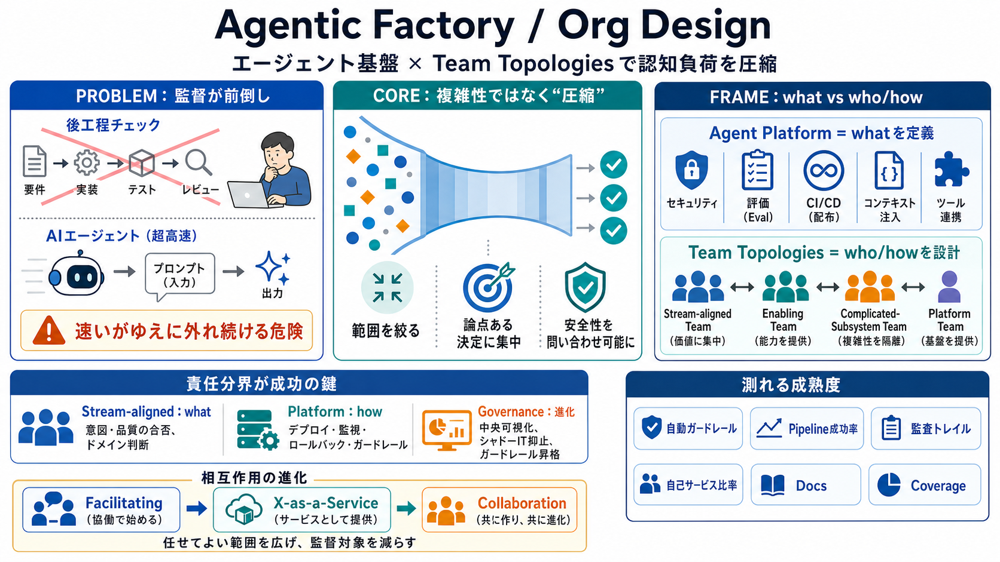

engineering team topologies for agentic AI workflows
For CTOs and CIOs, design nearshore engineering teams around cognitive load, ownership, telemetry, and agentic AI workfl…

設計→レビュー→テスト→運用を人が段階的に分担。
エージェントが即応し、監督論点が“プロンプト前”へ前倒し。
逐次チェックより、構造的判断を前倒しで行う。
人が扱うのは“論点のある決定”に寄せる。
安全性・信頼性を問い合わせ可能な形で委譲する。
セキュリティ、信頼性、ブランド整合性、文脈注入、ツール連携、評価、CI/CD…を提供。
4種類のチーム型と、3種類の相互作用で“責任分離”を作る。
ガードレール、監査トレイル、透明性の確保。
評価（evaluation）、CI/CD、文脈注入、ツール連携。
アプリを作るプロダクト（意図・合否判断＝what）。
能力をX-as-a-Service化（保証＝how）。
自律化までの橋渡し（縮む役割）。
AI基盤の専門部分を担う。
イネーブルメントが橋をかける（初期）。
プラットフォームが“問い合わせ”として提供。
複雑領域での共同構築。
意図・品質の合否（ドメインの判断）。
デプロイ、監視、ロールバック、ガードレール適用。
ガードレールが自動で適用される。
パイプライン成功率を追跡する。
監査トレイルを残す。
自己サービス比率を高める。
例付きで文書が揃っている。
守りの範囲が実運用でカバーされる。
デプロイ、監視、利用メトリクスを集約。
存続/廃止を判断しやすくする。
同じニーズが繰り返される（例：3回以上の反復）を目安に一般化。
ポートフォリオ追跡をツール化し、手作業裁きを減らす。
守り＋手続きの自己提供で、監督対象を絞る。
意図と合否（ドメイン判断）に集中する。
中央集約でシャドーITを抑え、ガードレールを昇格させる。
For CTOs and CIOs, design nearshore engineering teams around cognitive load, ownership, telemetry, and agentic AI workfl…
by MK DAMARCHED · 2026 — Autonomous Remediation with Guardrails: Production agentic systems incorporate safety mechanism…
Rob speaks with Matthew Skelton about Team Topologies, Agentic AI, and how modern organisations can evolve team design f…
X-as-a-Service: Clear interfaces, minimal interaction. When to use: Mature platform services; Well-defined APIs; Stable …
Team Topologies provides vital patterns and principles for establishing agency. Avoid unbounded access to data and other…